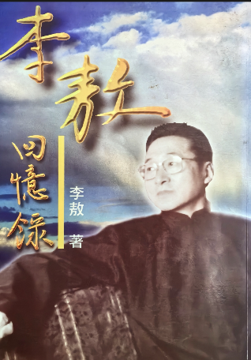

- 商業周刊出版公司發行
- 1997 年 5 月 1 日初版
- ISBN 957-8420-07-2
橫睨一世、卓爾不群的李敖，其大起大落的人生經歷，猶如一則現代傳奇。
從文壇彗星到人人口誅筆伐的大毒草，從論戰英雄到十四年牢獄之災，被查禁的書有九十六種之多，李敖始終以橫眉冷對千夫指的倨傲，縱筆所至不檢束的文章，雖千萬人吾往矣的氣魄，坦然面對、頑強對抗。
本書是李敖和時代頡頏最忠實的自述，更是一部關於現代知識分子覺醒與幻滅的悲歌。
自序
一九九七年我六十二歲，六十二歲對一些人是尷尬年紀： 蔣介石六十二歲流亡台灣，他尷尬，「樹倒猢猻散」，是謂尷；「吃力不討好」，是謂尬； 我六十二歲擁抱台灣，我尷尬，「人老心不老」，是謂尷，「無可無不可」是謂尬。 古人講三不朽：立德、立功、立言。蔣介石無德可立、無功可表，倒是言論總集出了一大堆，但都是文字大便，等於無言可垂。 此人崛起於亂世，才具不足，對亂世無能為力，卻拼命使勁，結果弄得「我志未酬人亦苦」，尷尬以死，必矣！ 至於我呢，也崛起於亂世，因無機會、台灣又小，故乏事功足述，但在立德立言上，卻自喜成就非凡。 不過，活到六十二歲，雖「人老心不老」，畢竟寶刀漸老；雖「無可無不可」，畢竟力難從心，尷尬之情，不可掩也。 何飛鵬先生嗜老成性，居然把我鎖定，誘以重利，強為他著書，命寫回憶錄交卷。 我自感身處亂世，卻一生倨傲不遜、卓爾不群、六親不認、豪放不羈、當仁不讓、守正不阿、和而不同、抗志不屈、百折不撓、勇者不懼、玩世不恭、說一不二、無人不罵、無書不讀、金剛不壞、精神不死，其立德立言，足以風世而為百世師，故欣然同意開寫。 信筆所之，縱跡大綱、情懷小樣、忽正忽俳、啟手啟足，又何尷尬之有？書成之日，自序始末以質今之信女善男，並俟後世聖人君子。
目錄
（出版序）如果台灣沒有李敖 自序 一 哈爾濱 1935-1937 一到二歲 二 北京、太原 1937-1948 二到十三歲 三 上海 1948-1949 十三到十四歲 四 台中 1949-1954 十四到十九歲 五 台大 1954-1959 十九到二十四歲 六 軍隊 1959-1961 二十四到二十六歲 七 山居 1961-1962 二十六到二十七歲 八 文獻會 1962-1963 二十七到二十八歲 九 文星 1962-1966 二十七到三十一歲 一○ 星沈 1966-1970 三十一到三十五歲 一一 軟禁 1970-1971 三十五到三十六歲 一二 監獄 1971-1976 三十六到四十一歲 一三 隱居 1976-1979 四十一到四十四歲 一四 復出 1979-1981 四十四到四十六歲 一五「二進宮」 1981-1982 四十六歲 一六 筆伐 1982-1992 四十七到五十七歲 一七 口誅 1993- 五十八歲至今 一八 前程 1997- 六十二歲以後